СП 370.1325800.2017 «Устройства солнцезащитные зданий. Правила проектирования»
О документе: разработчики, утверждение, регистрация, ключевые слова
1 ИСПОЛНИТЕЛЬ - федеральное государственное бюджетное учреждение «Научноисследовательский институт строительной физики Российской академии архитектуры и строительных наук» (НИИСФ РААСН)
2 ВНЕСЕН Техническим комитетом по стандартизации ТК 465 «Строительство»
3 ПОДГОТОВЛЕН к утверждению Департаментом градостроительной деятельности и архитектуры Министерства строительства и жилищно-коммунального хозяйства Российской Федерации (Минстрой России)
4 УТВЕРЖДЕН приказом Министерства строительства и жилищно-коммунального хозяйства Российской Федерации от 5 декабря 2017 г. № 1615/пр и введен в действие с 6 июня 2018 г.
5 ЗАРЕГЕСТРИРОВАН Федеральным агентством по техническому регулированию и метрологии (Росстандарт)
В случае пересмотра (замены) или отмены настоящего свода правил соответствующее уведомление будет опубликовано в установленном порядке. Соответствующая информация, уведомление и тексты размещаются также в информационной системе общего пользования - на официальном сайте разработчика (Минстрой России) в сети Интернет
© Минстрой России, 2017
Настоящий нормативный документ не может быть полностью или частично воспроизведен, тиражирован и распространен в качестве официального издания на территории Российской Федерации без разрешения Минстроя России
СП 1325800.2017
Дата введения - 2018-06-06
УДК 697.245:006.354 ОКС 90.060.50
Ключевые слова: солнцезащитные устройства, естественное освещение, солнечные карты, пассивное отопление, пассивное охлаждение, маркизы, козырьки, жалюзи, светопрозрачные конструкции
| Руководитель организации-разработчика «Научно-исследовательский институт строительной физики Российской академии архитектуры и строительных наук» Директор НИИСФ РААСН, д.т.н., проф. | И.Л.Шубин |
|---|---|
| Руководитель разработки - Директор НИИСФ РААСН, д.т.н., проф. | И.Л.Шубин |
| главный научный сотрудник, руководитель лаборатории «Энергосберегающие технологии в строительстве», к.т.н. | А.В.Спиридонов |
Введение
6 ВВЕДЕН ВПЕРВЫЕ
Настоящий свода правил соответствует требованиям Федерального закона от 30 декабря 2009 г. № 384-ФЗ «Технический регламент о безопасности зданий и сооружений» с учетом части 1 статьи 46 Федерального закона от 27 декабря 2002 г. № 184-ФЗ «О техническом регулировании», Федерального закона от 23 ноября 2009 г. № 261-ФЗ «Об энергосбережении и о повышении энергетической эффективности и о внесении изменений в отдельные законодательные акты Российской Федерации».
Разработка свода правил выполнена авторским коллективом федерального государственного бюджетного учреждения «Научноисследовательский институт строительной физики Российской академии архитектуры и строительных наук» (д-р техн. наук И.Л. Шубин , канд. техн. наук А.В. Спиридонов , инж. М.А. Кострица , Т.А.Ахмяров ) при участии Крымского Федерального Университета им. В.И. Вернадского (д-р техн. наук А.Т. Дворецкий , д-р техн. наук О.В. Сергейчук , канд. техн. наук В.С.Буравченко, архитекторы К.Н. Клевец , М.А. Моргунова ), ООО «Девелопмент - Проект» (архитектор А.Е. Блиндер ).
Solar Shading Devices in Buildings. Design rules
1Область применения
2Нормативные ссылки
В настоящем своде правил использованы нормативные ссылки на следующие документы:
ГОСТ 24866-2014 Стеклопакеты клееные. Технические условия
ГОСТ 30494-2011 Здания жилые и общественные. Параметры микроклимата в помещениях
ГОСТ 30698-2014 Стекло закаленное. Технические условия
ГОСТ 30826-2014 Стекло многослойное. Технические условия
ГОСТ 32539-2013 Стекло и изделия из него. Термины и определения
ГОСТ 33017-2014 Стекло с солнцезащитным или декоративным твердым покрытием. Технические условия
ГОСТ 33087-2014 Стекло термоупрочненное. Технические условия
ГОСТ 33125-2014 Устройства солнцезащитные. Технические условия
ГОСТ EN 410-2014 Стекло и изделия из него. Методы определения оптических характеристик. Определение световых и солнечных характеристик
ГОСТ Р 54863-2011 Жалюзи и ставни. Определение дополнительного термического сопротивления
ГОСТ Р 56926-2016 Конструкции оконные и балконные различного функционального назначения для жилых зданий. Общие технические условия
ГОСТ Р 57795-2017 Здания и сооружения. Методы расчета продолжительности инсоляции
СП 14.13330.2014 «СНиП II-7-81* Строительство в сейсмических районах»
(с изменением № 1)
СП 20.13330.2016 «СНиП 2.01.07-85* Нагрузки и воздействия»
СП 42.13330.2016 «СНиП 2.07.01-89* Градостроительство. Планировка и застройка городских и сельских поселений»
СП 50.13330.2012 «СНиП 23-02-2003 Тепловая защита зданий»
СП 52.13330.2016 «СНиП 23-05-95* Естественное и искусственное освещение»
СП 54.13330.2016 «СНиП 31-01-2003 Здания жилые многоквартирные»
СП 118.13330.2012 «СНиП 31-06-2009 Общественные здания и сооружения» (с изменениями № 1, № 2)
СП 131.13330.2012 «СНиП 23-01-99* Строительная климатология» (с изменениями № 1, № 2)
СП 345.1325800.2017 Здания жилые и общественные. Правила проектирования тепловой защиты
СанПиН 2.2.1/2.1.1.1076-01 Санитарно-эпидемиологические правила и нормативы. Гигиенические требования к инсоляции и солнцезащите помещений жилых и общественных зданий и территорий
Примечание - При пользовании настоящим сводом правил целесообразно проверить действие ссылочных документов в информационной системе общего пользования -на официальном сайте федерального органа исполнительной власти в сфере стандартизации в сети Интернет или по ежегодному информационному указателю «Национальные стандарты», который опубликован по состоянию на 1 января текущего года, и по выпускам ежемесячного информационного указателя «Национальные стандарты» за текущий год. Если заменен ссылочный документ, на который дана недатированная ссылка, то рекомендуется использовать действующую версию этого документа с учетом всех внесенных в данную версию изменений. Если заменен ссылочный документ, на который дана датированная ссылка, то рекомендуется использовать версию этого документа с указанным выше годом утверждения (принятия). Если после утверждения настоящего свода правил в ссылочный документ, на который дана датированная ссылка, внесено изменение, затрагивающее положение, на которое дана ссылка, то это положение рекомендуется применять без учета данного изменения. Если ссылочный документ отменен без замены, то положение, в котором дана ссылка на него, рекомендуется применять в части, не затрагивающей эту ссылку. Сведения о действии сводов правил целесообразно проверить в Федеральном информационном фонде стандартов.
3Термины и определения
В настоящем своде правил применены термины по ГОСТ 23166, ГОСТ 30494, ГОСТ 32539, ГОСТ 33125, ГОСТ Р 57795, СП 50.13330, СП 52.13330, а также следующие термины с соответствующими определениями.
- 3.1инсоляционные углы светопроема
- Горизонтальные и вертикальные углы, в пределах которых на плоскости светопроема возможно поступление прямых солнечных лучей в помещение. Примечание - При расчете инсоляционных углов глубина световых проемов принимается равной расстоянию от наружной плоскости стены до внутренней плоскости переплета.
- 3.2комплексная солнечная карта
- Солнечная карта с нанесенными на нее данными о местных особенностях климата - зонами желательной и нежелательной инсоляции, которые соответствуют отопительному периоду и периоду перегрева (периоду охлаждения зданий) в году.
- 3.3пассивное солнечное отопление
- Комплекс мероприятий по использованию тепловой энергии прямой солнечной радиации для отопления зданий без применения дополнительных инженерных систем в холодный период года.
- 3.4пассивное солнечное охлаждение
- Комплекс мероприятий по уменьшению поступления тепловой энергии прямой солнечной радиации в помещения без применения дополнительных инженерных систем в теплый период года.
- 3.5период охлаждения зданий
- Период года, в течение которого есть потребность в существенном количестве энергии для охлаждения зданий; характеризуется среднесуточной температурой наружного воздуха ≥ 21 о С.
- 3.6солнечная карта
- Проекция на горизонтальную плоскость дневной небесной полусферы, на которой отображены солнечные траектории, часовые линии и координатная сетка, состоящая из азимутальных линий и альмукантарат. Примечания 1 Солнечные карты могут быть ортогональные, стереографические и др. 2 Солнечные карты строятся для конкретной географической широты.
- 3.7солнечный фактор
- Отношение общей солнечной энергии, поступающей в помещение через светопрозрачную конструкцию, к солнечной энергии, падающей на светопрозрачную конструкцию. Примечание - Общая солнечная энергия, поступающая в помещение через светопрозрачную конструкцию, представляет собой сумму энергии, непосредственно проходящей через светопрозрачную конструкцию, и той части энергии, которая поглощается светопрозрачной конструкцией (включая солнцезащитные устройства), и, в дальнейшем, передается внутрь помещения.
- 3.8солнцезащита
- Комплекс мероприятий по уменьшению воздействия вредных факторов прямой солнечной радиации на микроклимат помещений, в частности, перегрева.
- 3.9солнцезащитное устройство; CЗУ
- Стационарный или регулируемый элемент конструкции здания, предназначенный для защиты помещений от воздействия прямой солнечной радиации. Примечание - СЗУ, состоящие из набора параллельный ламелей, называются ламинарными.
- 3.10солнцезащитный кожух
- Пространственная солнцезащитная конструкция с образующими в виде цилиндров, конусов и пр., в которой оборудованы оптимальные вырезы (с точки зрения защиты от прямых солнечных лучей). СП 1325800.2017
- 3.11суточный конус солнечных лучей; СКСЛ
- Суточный конус солнечных лучей -однопараметрическое множество солнечных лучей, приходящих в одну точку на земной поверхности в течение суток.
- 3.12пола СКСЛ
- СКСЛ - коническая поверхность, состоящая из двух частей (или пол), смыкающихся в точке пересечения образующей и оси конуса - вершине конуса. Примечание - СКСЛ состоит из двух пол - летней и зимней.
- 3.13теневая маска
- Графическое отображение на солнечной карте зоны экранирования небосвода непрозрачным объектом, например, элементами солнцезащитных устройств.
- 3.14угол затенения элемента СЗУ
- Минимальный угол с вершиной на поверхности остекления между поверхностью остекления и лучом, касательным к контуру затеняющего элемента СЗУ в рассматриваемой плоскости. Примечание - В ламинарных СЗУ - угол с вершиной на основании соседней ламели между граничной поверхностью солнцезащиты и лучом, касательным к контуру рассматриваемой ламели, определяется в плоскости, перпендикулярной к направляющей ламелей.
- 3.15угол раскрытия элемента СЗУ
- Максимальный угол с вершиной на поверхности остекления между нормалью к остеклению и лучом, касательным к контуру затеняющего элемента. Примечание - В ламинарных СЗУ - угол с вершиной в основании соседней ламели между нормалью к граничной поверхности солнцезащиты и лучом, касательным к контуру рассматриваемой ламели, определяется в плоскости, перпендикулярной к направляющей ламелей.
- 3.16угловая высота Cолнца
- Угол между направлением на Cолнце и его проекцией на плоскость горизонта.
4Общие положения
СП 1325800.2017
5Основные принципы проектирования солнцезащитных устройств
Комплекс мероприятий по солнцезащите должен быть предусмотрен в помещениях гражданских и производственных зданий, где в соответствии с СП 52.13330 выполняются зрительные работы высокой, очень высокой и наивысшей точности.
- снижение теплопоступлений в помещения в теплый период года (пассивное охлаждение);
- снижение теплопотерь и максимальные теплопоступления в помещения в холодный период года (пассивный солнечный обогрев);
- повышение зрительного комфорта, в том числе, устранение слепящей яркости в производственных и общественных зданиях и сохранение визуального контакта с внешней средой в течение всего года.
СП 1325800.2017
6Учет климатических особенностей регионов Российской Федерации при проектировании солнцезащитных устройств
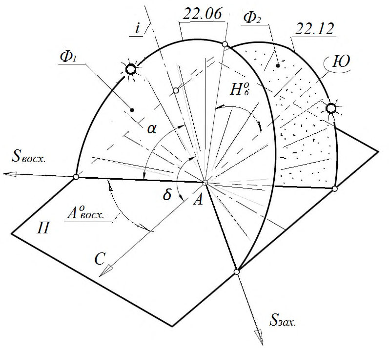
А - инсолируемая точка; Ф - суточный конус солнечных лучей ( Ф1 - летняя пола, Ф2 - зимняя пола); α - угол между образующей СКСЛ и его осью; Π -горизонтальная плоскость (поверхность Земли в инсолируемой точке); δ -широта местности и угол наклона оси конуса к плоскости горизонта; i - ось СКСЛ параллельна оси вращения Земли; S восх - направление на восход Солнца; S зах - направление на заход Солнца; азимут восхода ( А восх ) Солнца; H 6 -угловая высота Солнца 22.06 в 12 часов.
Рисунок 1 Геометрическая модель суточного конуса солнечных лучей на указанные даты (22 июня и 22 декабря)
- угловую высоту Солнца в полдень H 12 для выбранного дня года применяется в расчетах параметров положения солнечных коллекторов и фотоэлектрических панелей;
- азимуты восхода А о восх и захода А о зах Солнца для выбранной даты применяется при определении продолжительности инсоляции;
- время восхода τвосх и захода τзах Солнца.
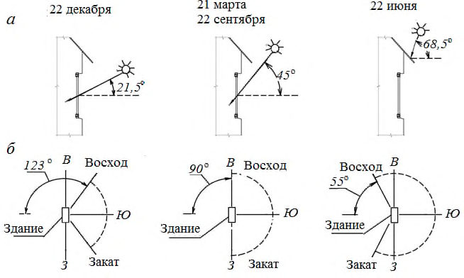
а - угловые высоты Солнца; б - азимуты восхода и захода Солнца Рисунок 2 - Солнечные углы для фасада южной ориентации (45 о с.ш.)
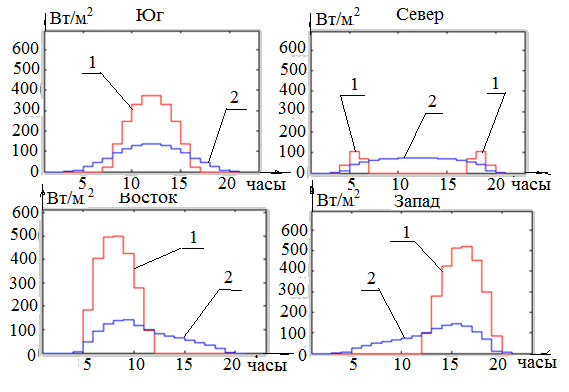
1 - прямая солнечная радиация; 2 - рассеянная солнечная радиация Рисунок 3 - Солнечная радиация на вертикальные фасады различной ориентации в июле месяце (50 о с.ш.)
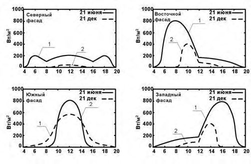
1 - лето; 2 - зима
Рисунок 4 Солнечная радиация на вертикальные поверхности различной ориентации в зависимости от времени суток (50 о с.ш.)
Для проектирования рациональных СЗУ по условиям суммарной годовой солнечной радиации на горизонтальную поверхность при действительных условиях облачности определены пять основных зон: первая - 900 кВт·ч/м² и менее; вторая - св. 900 до 1000 кВт·ч/м² ; третья - св. 1000 до 1100 кВт·ч/м² ; четвертая - св. 1100 до 1200 кВт·ч/м² ; пятая зона - св. 1200 кВт·ч/м² .
7Классификация солнцезащитных устройств
- месту установки и положению относительно светопрозрачной конструкции;
- типу солнцезащитного устройства и конструкции затеняющих элементов;
- способу управления и методу регулирования;
- ориентации затеняющих элементов;
- материалу изготовления затеняющих элементов;
- уровню солнцезащиты.
- наружные;
- межстекольные;
- межстекольные с вентилированием межстекольного пространства для установки в двойных фасадах;
- внутренние;
- комбинация некоторых из перечисленных мест установки. а - наружные СЗУ; б - межстекольные СЗУ; в - межстекольные СЗУ с вентилированием межстекольного пространства; г - внутренние СЗУ
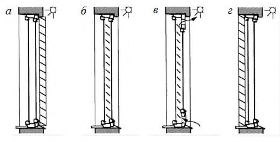
Рисунок 5 Классификация солнцезащитных устройств по месту установки и положению относительно светопрозрачной конструкции
- сплошные (затеняющие) элементы - сплошные непрозрачные или частично прозрачные конструкции различной рациональной конфигурации. К ним относятся козырьки, балконные плиты, вертикальные пилоны, солнцезащитные кожухи. Внешний вид солнцезащитного кожуха зависит от выбранной начальной формы непрозрачной поверхности (цилиндр, конус и пр.), ориентации светопроема и его формы, задач, поставленных перед солнцезащитой. Для предотвращения появления эффекта тепловой ловушки, в верхней части солнцезащитных кожухов следует предусматривать вентиляционные отверстия для удаления теплого воздуха, применять материалы с низкой теплоемкостью, тонкие, с окраской в светлые тона;
- с применением ламелей (затеняющие элементы состоят из ряда параллельных ламелей. Такое решение обеспечивает солнцезащиту с меньшим расходом материалов, оптимальным сопротивлением ветровым нагрузкам).
Если ламели СЗУ одного размера, их следует устанавливать на равном расстоянии. Если ламели по конструктивной необходимости отличаются размерами, рекомендуется устанавливать их на расстояниях прямо пропорциональных ширинам ламелей. а - сплошные; б - с применением ламелей одного размера; в - с применением ламелей разного размера;
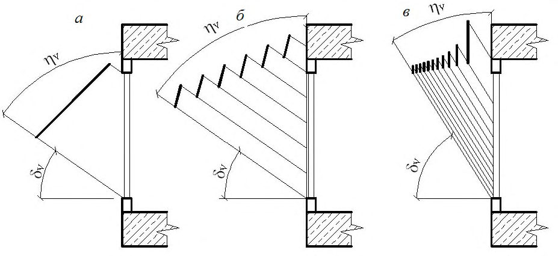
ηV - вертикальный угол затенения; δV - вертикальный угол раскрытия Рисунок 6 -Типы СЗУ в зависимости от конструкции затеняющих элементов
- стационарные, нерегулируемые, включая солнцезащитные и мультифункциональные стекла и стекла с установленными на них солнцезащитными пленками (геометрические параметры этих СЗУ не меняются в течение всего срока эксплуатации);
- регулируемые (геометрические параметры этих СЗУ могут изменяться). 7.5 По способу регулирования СЗУ могут быть:
- активно регулируемыми - геометрические параметры таких СЗУ без автоматизированных алгоритмов регулирования и могут быть изменены пользователем напрямую или с применением специальных систем управления;
- циклически регулируемыми -геометрические параметры СЗУ изменяются соответствующей системой управления согласно заданному пользователем или проектом циклу (суточному или годичному);
- адаптивно регулируемыми -геометрические параметры СЗУ изменяются в зависимости от условий внешней среды, в частности температуры воздуха и интенсивности солнечной радиации;
- пассивно-адаптивными - геометрические параметры СЗУ изменяются непосредственно условиями среды за счет температурной деформации или изменения агрегатного состояния материалов;
- активно-адаптивными - геометрические параметры СЗУ изменяются соответствующей системой управления в зависимости от данных оборудования метеорологического наблюдения.
Основные виды управления и методов регулирования СЗУ приведены в ГОСТ 33125.
СЗУ могут быть с несколькими видами управления одновременно.
- горизонтальные - в которых затеняющие элементы расположены горизонтально. В качестве горизонтальных СЗУ могут использоваться жалюзи с горизонтальными ламелями, летние помещения следующего этажа, такие как балконы и лоджии, а также консоли и козырьки над светопроемами;
- вертикальные -в которых затеняющие элементы расположены вертикально. В качестве вертикальных СЗУ могут использоваться жалюзи с вертикальными ламелями, а также боковые стенки лоджий, ризалиты, и другие внешние элементы дома;
- общего положения - в которых затеняющие элементы расположены под углом к проекции светопроема. В качестве СЗУ общего положения могут использоваться жалюзи с наклонными ламелями;
- комбинированные - состоящие из двух или более систем затеняющих элементов разного положения. В качестве комбинированных СЗУ могут использоваться сотовые конструкции, состоящие из вертикальных и горизонтальных элементов.
В СЗУ плоскости ламелей могут быть расположены как перпендикулярно к плоскости фасада, так и под определенным углом к этой плоскости. а - горизонтальные; б - вертикальные; в - общего положения; г - комбинированные
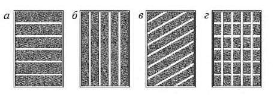
Рисунок 7 - Классификация СЗУ по положению затеняющих элементов
Значение общего солнечного фактора определяется по формуле (1)
где g СЗУ - солнечный фактор солнцезащитного устройства; g ост - солнечный фактор остекления.
Таблица 1 - Классификация СЗУ по уровню солнцезащиты
| Уровень солнцезащиты | Солнечный фактор, g общ , отн. ед. |
|---|---|
| Очень высокий | 0 - 0,20 |
| Высокий | 0,21 - 0,40 |
| Средний | 0,41 - 0,60 |
| Низкий | 0,61 - 0,80 |
| Очень низкий | 0,81 - 1,00 |
СЗУ (за исключением стационарных) могут быть с изменяемыми уровнями солнцезащиты в зависимости от положения затеняющих элементов.
На южных и юго-западных фасадах зданий рекомендуется применять СЗУ с высоким и очень высоким уровнем солнцезащиты.
8
Требования к солнцезащитным устройствам 8.1 Общие требования
8.2Требования по обеспечению теплового комфорта в помещениях
- минимизировать значение общего солнечного фактора в перегревный период года (период охлаждения зданий);
- учитывать фактор вторичных теплопоступлений за счет нагрева СЗУ.
- в период охлаждения за счет снижения поступлений прямой и рассеянной солнечной радиации уменьшается температура воздуха в помещении, что снижает потребляемую мощность систем охлаждения и кондиционирования воздуха;
- за счет вторичных теплопоступлений от солнцезащитного устройства возможны более высокие локальные значения температуры внутреннего воздуха;
- солнцезащитные устройства могут предотвращать прямое облучение людей и поверхностей в помещении прямой солнечной радиацией;
- солнцезащитные устройства могут не препятствовать попаданию солнечной энергии в помещение в отопительный период.
0,2 -для жилых зданий, больничных учреждений, диспансеров, амбулаторно-поликлинических учреждений, родильных домов, домов ребенка, домов - интернатов для престарелых и инвалидов, детских садов, яслей, яслей-садов и детских домов;
0,4 - производственных зданий, в которых должны соблюдаться заданные параметры микроклимата в рабочей зоне или по условиям технологии должны поддерживаться постоянными температура или температура и относительная влажность воздуха в здании.
Рекомендуется устройство солнцезащитных элементов на относе от остекления для обеспечения лучшей теплоотдачи.
8.3Требования по обеспечению визуального комфорта в помещениях
- удовлетворение требований по естественному освещению помещений в соответствии с СП 52.13330 (применение СЗУ с рациональным коэффициентом светопропускания);
- визуальный контакт помещений с окружающей средой;
- исключение попадания прямых солнечных лучей в поле зрения работающих;
- обеспечение максимального использования естественного освещения в зданиях;
- минимизация искажения цветопередачи при установке СЗУ.
8.4Требования по обеспечению прочности и устойчивости солнцезащитных устройств
Класс сопротивления ветровой нагрузке элементов конструкции и СЗУ в целом определяется согласно таблице 2 и в соответствии с действующими НД.
Таблица 2 - Сопротивление СЗУ и их элементов ветровой нагрузке
| Класс сопротивления ветровой нагрузке | Класс сопротивления ветровой нагрузке | Класс сопротивления ветровой нагрузке | Класс сопротивления ветровой нагрузке | Класс сопротивления ветровой нагрузке | Класс сопротивления ветровой нагрузке | Класс сопротивления ветровой нагрузке | Класс сопротивления ветровой нагрузке | |
|---|---|---|---|---|---|---|---|---|
| Наименование параметра | 0 | 1 | 2 | 3 | 4 | 5 | 6 | 7 |
| Ветровое давление, Па | < 50 | 50 | 70 | 100 | 170 | 270 | 400 | > 400 |
| Скорость ветра, м/с | < 9,2 | 9,2 | 10,8 | 12,8 | 16,8 | 21,2 | 25,8 | > 26,0 |
При применении горизонтальных затеняющих элементов солнцезащитных устройств, рекомендуется их располагать под углом более 45° к горизонту для облегчения стекания дождевой воды и сползания снега.
8.5Требования по минимизации расходов на отопление и кондиционирование воздуха помещений
8.6Эксплуатационные и иные требования
СЗУ, установленные на светопрозрачных конструкциях небольших размеров, где все створки могут открываться внутрь, могут обслуживаться из помещений без применения указанных выше конструкций. СЗУ в малоэтажных зданиях или на первых двух этажах могут обслуживаться с уровня земли с помощью лестниц. а - с галерей; б - из подвесной люльки; в - из помещений Рисунок 8 - Обеспечение доступа для обслуживания наружных солнцезащитных устройств
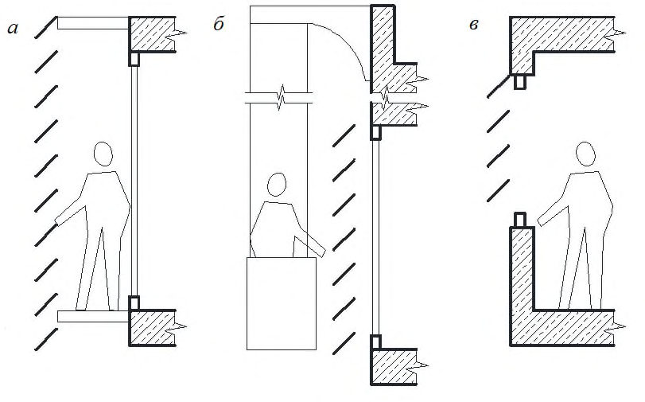
Деревянные элементы внешних СЗУ должны быть защищены от гниения и повреждения вредителями.
Стеклянные элементы должны быть изготовлены из безопасного стекла в соответствии с ГОСТ 30698, ГОСТ 30826 и ГОСТ 33087, исключающего разрушение от термического шока при неравномерном нагревании и падение крупных обломков в случае повреждения.
9Принципы проектирования солнцезащитных устройств для использования при строительстве и реконструкции зданий различного назначения
- информация о проектируемом здании (климатические условия места строительства, ориентация и геометрические параметры светопрозрачных конструкций, архитектурные решения предполагаемых солнцезащитных устройств);
- количество суммарной солнечной радиации в условиях действительной облачности на вертикальные поверхности, соответствующие ориентации фасадов здания (методика определения приведена в СП 345.1325800, а также на схематических картах приложения А).
Таблица 3
| Тип СЗУ | Ограничение теплопоступлений (летний режим) | Теплопоступления (зимний режим) | Зрительный комфорт |
|---|---|---|---|
| Наружные | +++ | + (стационарные) или ++ (убираемые) | + или ++ |
| Межсте- кольные | ++ | + (стационарные) или ++ (убираемые) | + или ++ |
| Внутренние | - | + | + или ++ |
| Солнце- защитные стекла | ++ | + | + |
Обозначения:
« +++ » - очень значительное влияние;
« ++ » - значительное влияние;
« + » - незначительно влияние;
« - » - нет никакого влияния.
- в первой зоне (суммарная годовая солнечная радиация на горизонтальную поверхность при действительной облачности до 900 кВт·ч/м² , приложение А) СЗУ следует располагать относительно светопрозрачной конструкции с внутренней стороны помещения для повышения визуального комфорта;
- во второй зоне (свыше 900 до 1000 кВт·ч/м² ) следует применять межстекольные и внутренние СЗУ. На южных и юго-западных фасадах следует применять, как правило, наружные СЗУ;
- в третьей зоне (свыше 1000 до 1100 кВт·ч/м² ) на южных, юго-западных и западных фасадах следует применять наружные СЗУ, на остальных фасадах можно применять межстекольные и внутренние СЗУ;
- в четвертой зоне (свыше 1100 до 1200 кВт·ч/м² ) на юго-восточных, южных, юго-западных и западных фасадах следует применять наружные СЗУ, на остальных фасадах - межстекольные и внутренние СЗУ;
- в пятой зоне (свыше 1200 кВт ч/м² ) при любой ориентации фасада следует применять наружные СЗУ.
- горизонтальные - наиболее эффективны при южной ориентации окон;
- вертикальные - целесообразно применять при ориентации окон на север, северо-восток и северо-запад;
- комбинированные - наиболее эффективны при юго-западной и юговосточной ориентациях;
- СЗУ общего положения - целесообразны при юго-западной, западной и юго-восточной ориентациях;
- солнцезащитные кожухи универсальны - их можно применять при любой ориентации фасада.
Рисунок 9 - Рекомендации по применению СЗУ при различных ориентациях фасадов
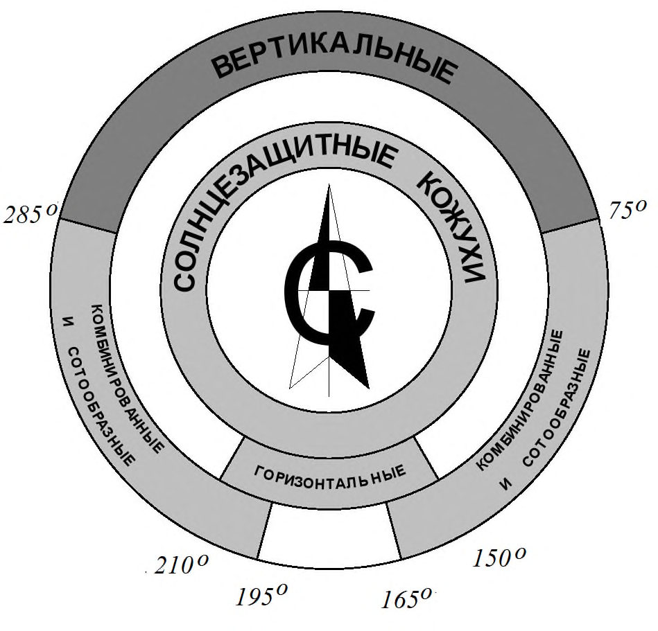
Рекомендации по применению СЗУ приведены в приложении Д.
10Энергетическая эффективность применения солнцезащитных устройств
где G -энергетическая освещенность конкретного фасада солнечной радиацией, Вт/м² ;
A - площадь оконного проема (включая раму), м² ; m - отношение площади остекления к площади оконного проема; g общ - значение общего солнечного фактора, включая СЗУ, при наличии (определяется по формуле (1));
S - коэффициент затенения, учитывающий помехи в виде деревьев, других зданий, солнцезащитных устройств и т.д.
Характеристики некоторых типов остекления приведены в таблице 4.
Таблица 4 - Характеристики некоторых типов остекления
| Тип остекления | Солнечный фактор | Коэффициент светопропускания, отн.ед. |
|---|---|---|
| g ост , отн. ед. |
| Однокамерный стеклопакет с двумя простыми стеклами М1, 4-12-4 | 0,76 | 0,81 |
|---|---|---|
| Однокамерный стеклопакет с одним И- стеклом, 4-12-4И | 0,66 | 0,77 |
| Однокамерный стеклопакет с одним И- стеклом, 4-12 Ar-4И | 0,66 | 0,77 |
| Однокамерный стеклопакет с одним солнцезащитным стеклом, 6 С м -16 Ar -6 | 0,34 | 0,59 |
| Двухкамерный стеклопакет с тремя простыми стеклами М1, 4-6-4-6-4 | 0,63 | 0,73 |
| Двухкамерный стеклопакет с одним И- стеклом, 4-12 Ar-4-12 Ar-4И | 0,60 | 0,70 |
В таблице 6 приведены значения g СЗУ для жалюзи с различными углами наклона затеняющих элементов и коэффициентами отражения, в значительной мере влияющими на значения солнечного фактора.
Фактические значения солнечного фактора СЗУ предоставляются производителями солнцезащитных устройств.
Таблица 5 - Влияние местоположения СЗУ на значение солнечного фактора
| Местоположение СЗУ | Солнечный фактор g общ , отн. ед. |
|---|---|
| Наружные жалюзи с горизонтальными затеняющими элементами (угол наклона 65 о ) | 0,09 |
| Межстекольные жалюзи с горизонтальными затеняющими элементами (угол наклона 65 о ) | 0,23 |
| Внутренние жалюзи с горизонтальными затеняющими элементами (угол наклона 65 о ) | 0,49 |
Таблица 6 - Влияние угла наклона затеняющих элементов на значение солнечного фактора
| Тип жалюзи | Коэффициент отражения затеняющих элементов, отн. ед. | Коэффициент отражения затеняющих элементов, отн. ед. | Угол наклона ламелей | Солнечный фактор g СЗУ , отн. ед. | Солнечный фактор g СЗУ , отн. ед. |
|---|---|---|---|---|---|
| Высокий | Низкий | Высокий | Низкий | ||
| Горизонтальные | 0,9 | 0,1 | 0° | 0,55 | 0,58 |
| Горизонтальные | 0,9 | 0,1 | 45° | 0,33 | 0,51 |
| Горизонтальные | 0,9 | 0,1 | 90° | 0,12 | 0,46 |
| Вертикальные | 0,9 | 0,1 | 0° | 0,59 | 0,59 |
| Вертикальные | 0,9 | 0,1 | 45° | 0,38 | 0,52 |
| Вертикальные | 0,9 | 0,1 | 90° | 0,12 | 0,46 |
АПриложение А. Схематические карты
Рисунок А.1 Схематическая карта суммарной годовой солнечной радиации на горизонтальную поверхность в условиях действительной облачности, кВт·ч/м²
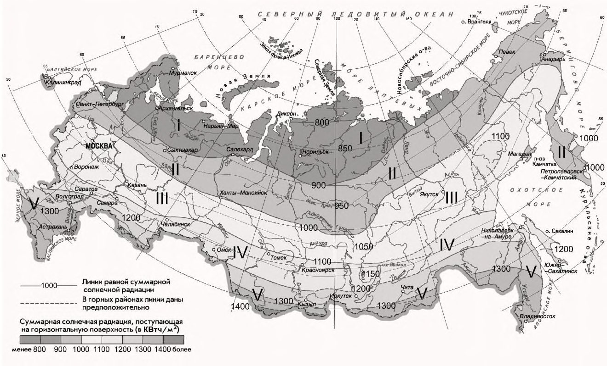
Рисунок А.2 Схематическая карта среднемесячных температур июля
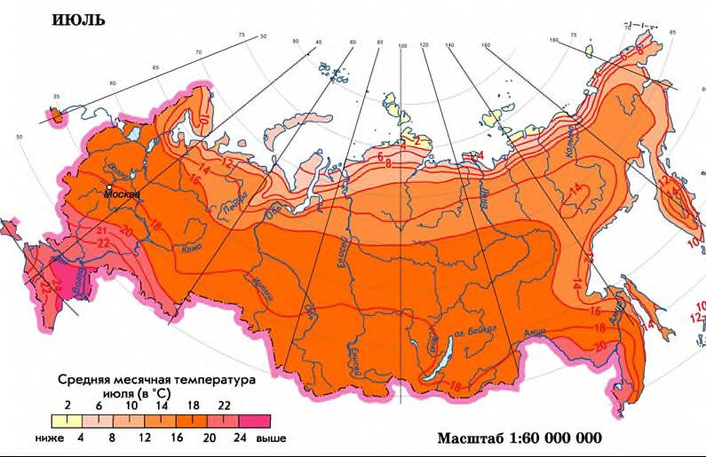
БПриложение Б. Характеристики современных солнцезащитных и мультифункциональных стекол
В настоящем приложении приведены обобщенные характеристики солнцезащитных и многофункциональных современных стекол (таблица Б.1). Более подробные данные о характеристиках солнцезащитных и многофункциональных стекол можно получить у производителей стекла и стеклопакетов.
Таблица Б.1
| Наименование стекол | Солнечный фактор g , отн. ед. | Коэффициент светопропускания, отн. ед. |
|---|---|---|
| Солнцезащитные | 0,35 - 0,75 | 0,30 - 0,45 |
| Многофункциональные | 0,20 - 0,60 | 0,15 - 0,75 |
Приложение В
Основные виды солнцезащитных устройств
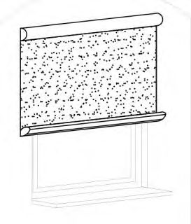
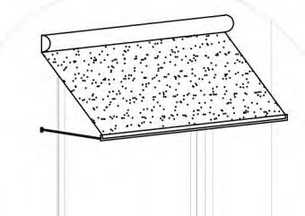
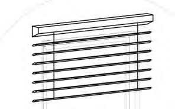
Таблица В.1 - Наружные СЗУ
| Наименование | Описание |
|---|---|
| 1 Внешняя рулонная штора | Опускается вертикально вниз в плоскости окна. Затеняющий элемент - полотнище (чаще всего - экран из стеклоткани, полиэстера или акрила, в ряде случаев - металлизированный), с защитным коробом для сворачивания полотнища и боковыми направляющими шинами или тросами |
| 2 Внешние венецианские жалюзи | Горизонтальные (металлические, стеклянные и др.) пластины крепятся снаружи окна. Могут быть подняты или опущены, а также установлены под нужным углом для регулирования естественного освещения в помещениях. Могут быть с защитным коробом и направляющими профилями вдоль окна |
| 3 Откидная маркиза | Устройство, включающее кронштейн, который выдвигается вперед при опускании навеса. Крепится над окном. Оборудуется тканью и коробом для втягивания ткани |
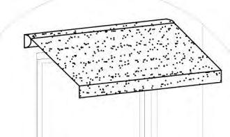
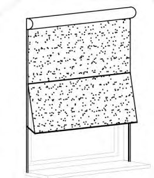
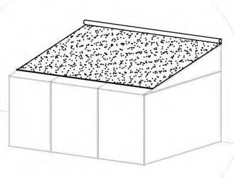
| 4 Складывающаяся маркиза | Устройство, предназначенное, в основном, для витрин и открытых веранд (навес). Оснащается двумя и более выдвижными кронштейнами, которые обеспечивают натяжение ткани (например, акриловой). Выдвигается на значительные расстояния (3 м и более). Для таких навесов предусматриваются закрытые короба для защиты ткани после ее втягивания |
|---|---|
| 5 Скользящая маркиза | Устройство представляет собой комбинацию внешней вертикальной шторы и откидного навеса. В нижней части окна полотнище ткани отклоняется вперед. Подходит для высоких и узких окон |
| 6 Маркизы для зимнего сада | Разработаны для снижения воздействия солнечной энергии на полностью застекленные зимние сады, обеспечивая внешнее покрытие наклонной крыши и, иногда, фронтальной части зимнего сада. Возможны различные формы и размеры, оснащаются акриловой тканью или стекловолокном |
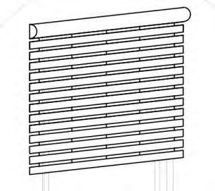
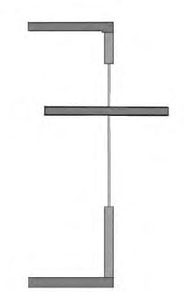
| 7 Рольставни | Устройство, представляющее собой ряд горизонтальных ламелей, выполненных из алюминия или пластика, скрепленных вместе на шарнирах и скользящих вверх и вниз. Предназначаются для окон и дверей. Помимо защиты от прямых солнечных лучей, в закрытом положении предназначены для защиты от незаконного проникновения через окна. Способствуют повышению сопротивления теплопередаче окон в |
|---|---|
| 8 Световые полки | Специальные козырьки, расположенные таким образом, чтобы защищать помещения от прямых солнечных лучей и одновременно обеспечивать дополнительное естественное освещение помещений за счет отражения от верхней поверхности световой полки |
- 9 Комбинированные устройства
- 10 Солнцезащитные кожухи
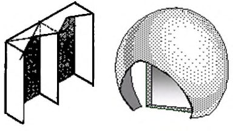
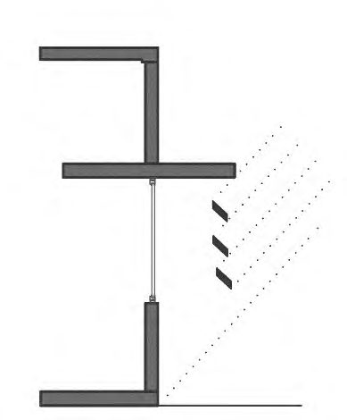
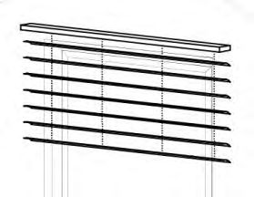
Горизонтальные козырьки, совмещенные с горизонтальными жалюзи. Позволяет значительно уменьшать вынос козырька
Пространственные конструкции, устанавливаемые на фасадах здания. Исходя из задач, которые ставятся перед проектируемой солнцезащитой, определяется участок небосвода, от которого необходимо защитить световой проем
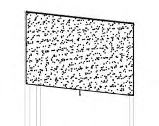
Таблица В.2 - Внутренние СЗУ
| Наименование | Описание |
|---|---|
| 1 Венецианские жалюзи | Наиболее распространенные внутренние СЗУ, состоящие из ламелей (из алюминия, дерева или пластика). Ламели за счет вращения регулируются от открытого состояния до полностью закрытого. Ламели могут быть перфорированными для лучшего естественного освещения помещений |
| 2 Роликовая штора | Опускается вертикально вниз в плоскости окна с его внутренней стороны. Могут применяться металлизированные ткани для лучшего отражения солнечной радиации |
| 3 Вертикальные жалюзи | Система состоит из ряда вертикальных ламелей. Применяются, в основном, ткани, реже пластик или алюминий |
| 4 Гофрирован- ные жалюзи | Оснащены гофрированной тканью, которая опускается вниз вдоль плоскости окна. Удобны для нестандартных форм окон, могут применяться для трапециевидных или полукруглых форм окон |
ГПриложение Г. Характеристики солнцезащитных устройств
В настоящем приложении приведены характеристики некоторых солнцезащитных устройств (таблица Г.1). Более подробные данные можно получить у производителей СЗУ.
Таблица Г.1
| Вид СЗУ | Тип СЗУ | Солнечный фактор g СЗУ , отн. ед | Коэффициент светопропускания, отн. ед. |
|---|---|---|---|
| Наружные регулируемые (убираемые) | Жалюзи с горизонтальными затеняющими элементами (угол наклона ламелей от 85 о до 0 о к горизонту) | 0,10 - 0,30 | 0,10 - 0,60 |
| Наружные регулируемые (убираемые) | Внешняя рулонная штора | 0,15 | 0,10 |
| Наружные регулируемые (убираемые) | Рольставни | 0,10 | 0,02 |
| Межстекольные | Жалюзи с горизонтальными затеняющими элементами с невентилируемым межстекольным пространством (угол наклона ламелей от 85 о до 0 о к горизонту) | 0,23 - 0,50 | 0,10 - 0,45 |
| Внутренние | Жалюзи с горизонтальными затеняющими элементами (угол наклона ламелей от 85 о до 0 о к горизонту) | 0,45 - 0,65 | 0,10 - 0,45 |
| Солнцезащитное остекление | Постоянно установлено в качестве наружного стекла | 0,20 - 0,55 | 0,35 - 0,70 |
| Солнцезащитные пленки | Наклеено на наружное стекло | 0,30 - 0,50 | 0,15 - 0,45 |
ДПриложение Д. Рекомендации по применению солнцезащитных устройств
Эффективность применения тех или иных солнцезащитных устройств зависит от их расположения, ориентации фасадов. В настоящем приложении даны некоторые рекомендации по применению различных СЗУ (таблица Д.1).
Таблица Д.1 - Рекомендации по применению СЗУ
| Тип СЗУ | Вариант СЗУ | Пассив- ное охлаж- дение | Пассив- ное отопле- ние | Сниже- ние тепло- потерь зимой | Тепло- вой ком- форт | Зритель- ный комфорт | Связь с наруж- ным простр- вом | Рекомен- дуемая ориентация фасадов | Устой- чивость к ветро- вым нагруз- кам | Срок службы |
|---|---|---|---|---|---|---|---|---|---|---|
| Наружные регулируемые (убираемые) | Жалюзи с горизонтальными затеняющими элементами | ++ | ++ | - | ++ | +/- | +/- | В, Ю, З | + | + |
| Наружные регулируемые (убираемые) | Внешняя рулонная штора | ++ | ++ | +/- | ++ | + | + | В, Ю, З | +/- | + |
| Наружные регулируемые (убираемые) | Рольставни | ++ | ++ | + | ++ | - | +/- | В, Ю, З | ++ | + |
| Наружные регулируемые (убираемые) | Маркизы | + | ++ | - | ++ | + | + | В, Ю, З | +/- | + |
| Наружные регулируемые за счет поворота затеняющих элементов (не убираемые) | Жалюзи с горизонтальными затеняющими элементами | ++ | + | н/а | ++ | +/- | + | Ю | ++ | ++ |
| Тип СЗУ | Вариант СЗУ | Пассив- ное охлаж- дение | Пассив- ное отоплен ие | Сниже- ние тепло- потерь зимой | Тепло- вой ком- форт | Зритель- ный комфорт | Связь с наруж- ным простр- вом | Рекомен- дуемая ориентация фасадов | Устой- чивость к ветро- вым нагруз- кам | Срок службы |
|---|---|---|---|---|---|---|---|---|---|---|
| Наружные нерегулируе- мые (не убираемые) | Жалюзи с горизонтальными затеняющими элементами | + | +/- | н/а | + | +/- | + | Ю | ++ | ++ |
| Наружные нерегулируе- мые (не убираемые) | Жалюзи с вертикальными затеняющими элементами | + | +/- | н/а | +/- | +/- | + | В, З, С | ++ | ++ |
| Межстеколь- ные | Жалюзи с | + | ++ | н/а | + | + | + | В, Ю, З | н/а | ++ |
| Межстеколь- ные | горизонтальны- ми затеняющими элементами с невентилируе- мым межстекольным пространством Жалюзи с горизонтальны- ми затеняющими элементами с вентилируемым | ++ | ++ | н/а | ++ | + | + | В, Ю, З | н/а | ++ |
| межстекольным пространством | ||||||||||
|---|---|---|---|---|---|---|---|---|---|---|
| Тип СЗУ | Вариант СЗУ | Пассив- ное охлаж- дение | Пассив- ное отоплен ие | Сниже- ние тепло- потерь зимой | Тепло- вой ком- форт | Зритель- ный комфорт | Связь с наруж- ным простр- вом | Рекомен- дуемая ориентация фасадов | Устой- чивость к ветро- вым нагруз- кам | Срок службы |
| Металлизирован- ные сворачивающие- ся экраны | + | ++ | +/- | + | ++ | + | В, Ю, З | н/а | + | |
| Солнцеза- щитное остекление | Постоянно установлено в качестве наружного стекла | + | - | н/а | + | - | ++ | В, Ю, З, С | н/а | ++ |
| Солнцеза- щитные пленки | Наклеено на наружное стекло | + | - | н/а | + | - | ++ | В, Ю, З, С | н/а | + |
Обозначение эффективности солнцезащитных устройств:
«++» - очень высокая;
«+» - высокая;
«+/-» - средняя;
«-» - низкая;
«н/а» - неактуально
ЕПриложение Е. Методика проектирования рациональной формы стационарных солнцезащитных устройств с использованием суточного конуса солнечных лучей
Е.1Область применения
Для оптимального формообразования стационарных солнцезащитных устройств, представляющих пространственные структуры - солнцезащитные кожухи (цилиндры, конусы и другие криволинейные или гранные поверхности) целесообразно применять способ, основанный на применении суточного конуса солнечных лучей.
Е.2Формообразование СЗУ с применением СКСЛ
Графоаналитический способ формообразования СЗУ основан на применении суточного конуса солнечных лучей (рисунок 1), который выполняется на компьютере в одной из известных графических программ.
Е.2.1 Часовая диаграмма изображена на дополнительной проекции (III) в направлении оси конуса. Для любого положения Солнца может быть найдена соответствующая образующая конуса, например l i и определено время суток τ (рисунок Е.1).
H - угловая высота солнца; Π - горизонтальная плоскость; α - угол между образующей конуса и его осью; А о зах- азимут захода солнца; δ - широта местности; τ - часовой угол; l i -образующая конуса
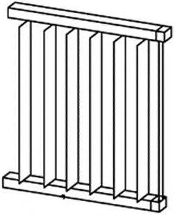
Рисунок Е.1 Прямоугольные проекции суточного конуса солнечных лучей
СП 1325800.2017
Е.2.2 Для заданной географической широты и произвольных суток угол α между образующей конуса и его осью определяется по формуле
где 66,55 - наклон оси вращения Земли к плоскости ее орбиты;
360 - угол, который за год описывает Земля, двигаясь вокруг Солнца; 365 - число дней в году;
N - число суток, которые отсчитываются от 22 июня до заданного дня года конца периода перегрева.
Минимальные значения угла α соответствуют дням солнечного противостояния 22 июня и 22 декабря и равны 66,5 . Угол α увеличивается к дням равноденствия 22 сентября и 21 марта. В дни равноденствия суточный конус солнечных лучей вырождается в плоскость. Это значит, что угол α равен 90 о , а 2 α - 180 о , т.е. плоскость.
Угловая высота Солнца в полдень H о определяется по формуле (см. рисунок Е.1)
Для широты местности 45 о 22 июня (рисунок Е1) угловая высота Солнца равна
Правая нижняя пола СКСЛ соответствует 22 декабря (рисунок Е.1). Угловая высота Солнца определяется по формуле
Для дней осеннего и весеннего равноденствий плоскость, в которую вырождается СКСЛ, совпадает с осью x 2 и для 45 о с.ш. угловая высота солнца H о 3 = H о 9 равна 45 о .
По суточному конусу солнечных лучей могут быть определены азимуты восхода и захода Солнца. Значения этих углов приведены на рисунке 2.
Е.2.3 Размеры и контуры солнцезащитного устройства определяются для заданного периода затенения. Для этого определяется линия пересечения поверхности солнцезащитного устройства и суточного конуса солнечных лучей для граничных дней периода затенения по следующему алгоритму:
- вычерчивается светопроем на фасаде соответствующей ориентации;
- выбирается пространственная форма солнцезащитного устройства в зависимости от пластики фасада;
- определяется период перегрева здания для соответствующих климатических условий места строительства по 6.11. По формуле (Е.1) определяется угол при вершине конуса;
- задается (вычерчивается) СКСЛ (рисунок Е.1) с половиной угла при вершине конуса, рассчитанный по алгоритму Е.2.2;
- СКСЛ ориентируется так, чтобы его вершина совпадала с расчетной точкой (РТ) (рисунки Е.2, Е.3), а его ось принадлежала вертикальной плоскости, расположенной в направлении север - юг и была наклонена к плоскости горизонта под углом δ (широта местности). Определение расчетной точки показано на рисунке Ж.2;
- строится контур СЗУ (рисунки Е.2, Е.3) как линия пересечения поверхности солнцезащитного устройства и суточного конуса солнечных лучей.
Пример 1
Спроектировать СЗУ на южном фасаде в виде цилиндра с горизонтальной осью, параллельной фасаду здания. Место строительства г. Сыктывкар (61 о с.ш.):
- вычерчивается светопроем на фасаде соответствующей ориентации. В настоящем примере фасад южный;
- в качестве поверхности СЗУ используется цилиндр, ось i которого горизонтальна и параллельна плоскости фасада (рисунок Е.2).
В случае, если место строительства г. Сыктывкар (в соответствии с 6.11 вторая зона - св. 900 до 1000 кВт ч/м² ), период перегрева (период охлаждения зданий) - с 22 мая по 22 июля:
- число суток периода перегрева от 22 марта до 22 сентября; N 22.09 = 32 дня;
- угол при вершине СКСЛ определяется по формуле (Е.1):
= 70 о ;
- ориентируется СКСЛ так, чтобы его вершина совпадала с расчетной точкой РТ, а его ось соответствовала вертикальной плоскости, расположенной в направлении север-юг и была наклонена к плоскости горизонта под углом δ ;
- строится контур СЗУ (рисунок Е.2) как линия пересечения поверхности цилиндра и суточного конуса солнечных лучей.
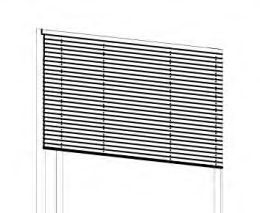
1 - суточный конус солнечных лучей; 2 - солнцезащитное устройство; 3 -цилиндр; 4 - контур СЗУ ; i - ось цилиндра
Рисунок Е.2 Солнцезащитное устройство в виде части цилиндра с осью, параллельной плоскости фасада
Пример 2
Спроектировать СЗУ на южном фасаде в виде цилиндра с горизонтальной осью, перпендикулярной к фасаду здания. Место строительства г. Воронеж (51 о с.ш.):
- вычерчивается светопроем на фасаде соответствующей ориентации. В настоящем примере фасад южный;
- в качестве поверхности СЗУ используется цилиндр, ось i которого горизонтальна и перпендикулярна к плоскости фасада и который легко может быть реализован в виде маркизы (рисунок Е.3).
- В настоящем примере в качестве места строительства определен г. Воронеж (по 6.11 третья зона - от 1001 до 1100 кВт ч/м² ), период перегрева (период охлаждения зданий) - 22 апреля по 22 августа:
- число суток периода перегрева с 22 июня до 22 августа N 22.08 = 62;
- угол при вершине СКСЛ определяется по формуле (Е.1): = 79 о ;
- СКСЛ ориентируется так, чтобы его вершина совпадала с расчетной точкой, а его ось принадлежала вертикальной плоскости, расположенной в направлении север-юг и была наклонена к плоскости горизонта под углом δ ;
- строится контур СЗУ (рисунок Е.3) как линия пересечения поверхности цилиндра и суточного конуса солнечных лучей.
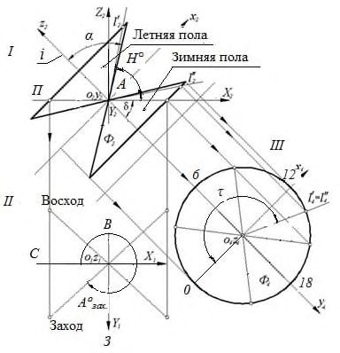
1 - суточный конус солнечных лучей; 2 - солнцезащитное устройство; 3 контур СЗУ; i - ось цилиндра
Рисунок Е.3 осью, перпендикулярной плоскости фасада
- Солнцезащитное устройство в виде части цилиндра с
ЖПриложение Ж. Методика проектирования рациональной формы стационарных солнцезащитных устройств с использованием солнечных карт
Ж.1Область применения
Ж.1.1 Солнечная карта представляет собой графический инструмент для проектирования солнцезащитных устройств и определения периода инсоляции.
Ж.2На солнечной карте изображены:
- азимутальные линии 1 (рисунок Ж.1), с помощью которых определяют азимут Солнца;
- концентрические круги 2 -альмукантараты , с помощью которых определяют высоту Солнца;
- траектории движения Солнца по небосводу 3 - для 22 числа каждого месяца;
- дуги окружностей 4 солнечные часовые линии. а - построение теневой маски; б - солнечная карта
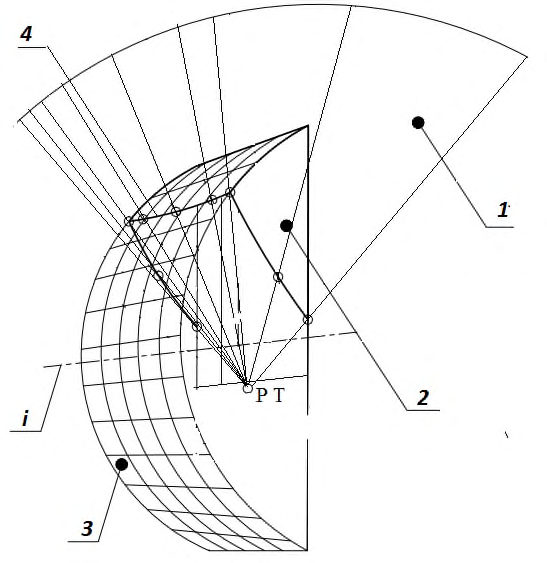
Рисунок Ж.1 Построение теневой маски на солнечной карте
Примечание -Альмукантарата 0° совпадает с окружностью горизонта, а альмукантарата 90° вырождается в одну точку точку зенита.
Ж.3Расчетная точка
Расчетная точка (РТ) - точка, которая принимается в вертикальной срединной секущей плоскости, перпендикулярной к поверхности светопроема и лежащая на его нижнем внутреннем контуре. σ - вертикальная срединная секущая плоскость, перпендикулярная к поверхности светопроема Рисунок Ж.2 Построение расчетной точки
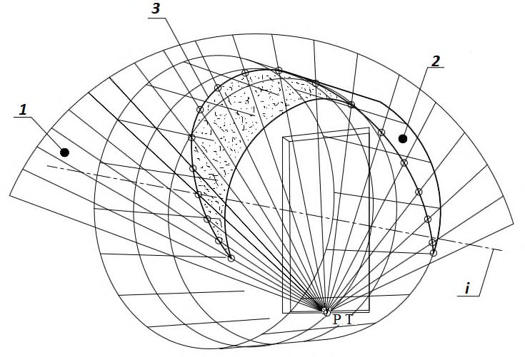
Ж.4Теневая маска
Теневая маска - графическое отображение на солнечной карте зоны экранирования небосвода определенным непрозрачным объектом. На рисунке Ж.1 - зона 12223242.
Ж.5Построение теневой маски
Для светопроема на солнечной карте теневая маска определяется в следующей последовательности:
- строится проекция затеняющего объекта (СЗУ, рядом стоящее здание) на небосвод (центр проекции - расчетная точка);
- полученная проекция на небосвод проецируется из надира на горизонтальную плоскость, проходящую через РТ;
- 12223242 и есть проекция затеняющего объекта (СЗУ, рядом стоящее здание) на небосвод.
Ж.6Алгоритм формообразования СЗУ в виде горизонтального козырька при заданной зоне перегрева
Чтобы определить форму СЗУ в виде горизонтального козырька необходимо:
СП 1325800.2017
- выбрать солнечную карту для заданной местности (например, 51 о с. ш., что соответствует третьей зоне, Приложение А) и согласно 6.11 учесть период перегрева с 22 апреля по 22 августа (рисунок Ж.3);
- если ориентация фасада южная, то эффективным СЗУ согласно 9.4 (рисунку 8) может быть горизонтальный козырек;
- для 51 о с.ш. согласно 6.12 теневая маска козырька должна закрывать зону перегрева (ЗП) на солнечной карте (рисунок Ж.3), соответствующей периоду с 22 апреля по 22 августа;
- по выбранной теневой маске на плане и разрезе светопроема строятся солнечные лучи из точек на границе козырька для выбранных азимутальных направлений - направление 1, направление 2 и т.д. (на рисунке Ж.3 направление 1, направление 2 и т.д.);
- определяются угловые высоты для выбранных азимутальных направлений и строятся солнечные лучи на разрезе II-II, проходящие через РТ до пересечения с козырьком;
- на плане лучи с построенными на них точками козырька поворачиваются до соответствующего азимутального направления, например, направление 5. Полученные точки соединяются плавной кривой.
Это и есть горизонтальная проекция контура козырька. а - солнечная карта для 52 о с.ш.; б - план козырька; в - разрез козырька; Напр. - азимутальное направление
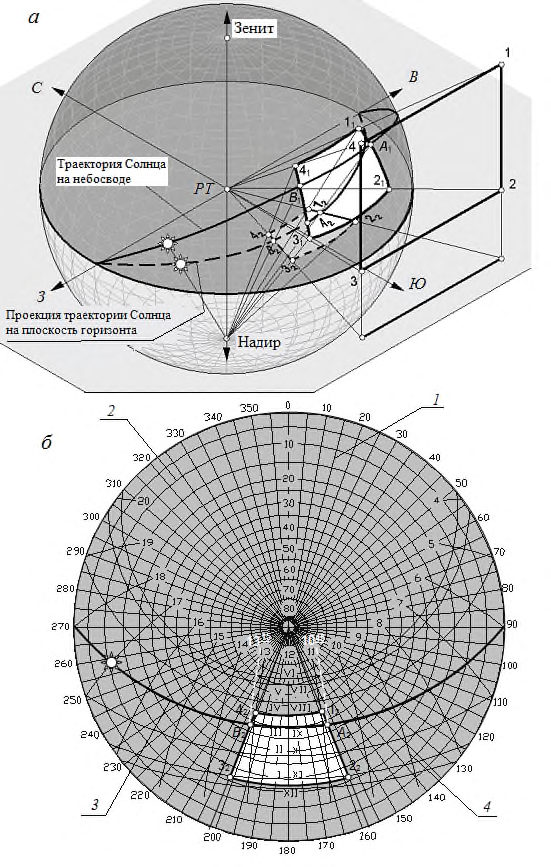
Рисунок Ж.3 Формообразование козырька
На рисунке Ж.4 изображены различные СЗУ, состоящие из отсеков плоскостей и ламелей, а также их теневые маски. а б а - горизонтальный козырек; б - криволинейный козырек; в - составной козырек; г - козырек с экраном на относе; д - вертикальные экраны перпендикулярные фасаду; е - комбинированное СЗУ; ж - вертикальные экраны, расположенные под углом к фасаду; и - регулируемые вертикальные экраны; к - комбинированное (сотовое) СЗУ с наклонными горизонтальными
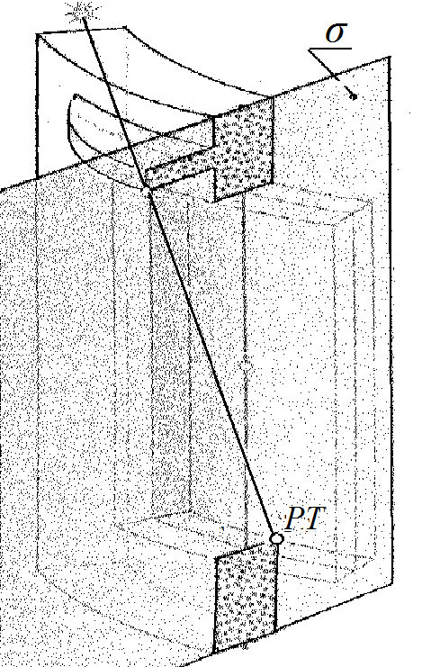
СП 1325800.2017 экранами; л -комбинированное (сотовое) СЗУ; м -регулируемые горизонтальные экраны; н - комбинированное (сотовое) СЗУ с наклонными вертикальными экранами
Рисунок Ж.4 Солнцезащитные устройства, состоящие из отсеков плоскостей и ламелей и их теневые маски
Ж.7Выбор СЗУ для светопроемов заданной ориентации
На солнечную карту с наложенной теневой маской фасада накладываются теневые угломеры (приложение И) так, чтобы плоскость фасада на угломере совпадала с плоскостью фасада на теневой маске.
Теневая маска СЗУ - часть небесной сферы между кривой выбранного угла раскрытия и плоскостью фасада. Выбирать следует тот угол инсоляции, теневая маска которого наиболее эффективно закрывает область нежелательной инсоляции (рисунки Ж.8, Ж.9, Ж.10, заштрихованные зоны перегрева ЗП3, ЗП2, ЗП1), максимально открывая при этом нейтральную часть небесной сферы (рисунок Ж.5)
Примечания
1 При прочих равных или сопоставимых показателях рекомендуется использовать горизонтальные, вертикальные или комбинированные СЗУ вследствие их большей технологичности по сравнению с СЗУ общего положения.
2 При невозможности обеспечить эффективную солнцезащиту с углом раскрытия δ ≥ 40° рекомендуется применять регулируемые СЗУ.
Рисунок Ж.5 Пример применения вертикальных СЗУ для северосеверо-западного фасада
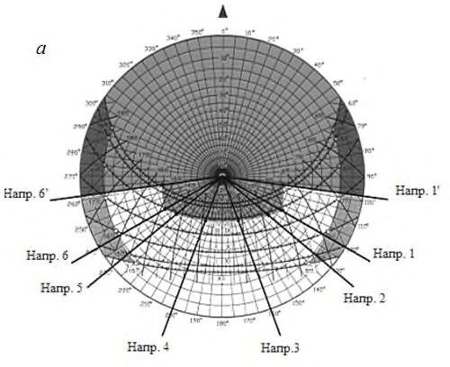
Для негоризонтальных СЗУ следует уточнить положение солнцезащитных ламелей, в частности угол между плоскостью остекления и ламелями Θ. Определяющие СЗУ углы задаются в натуральную величину на характерном сечении СЗУ - плоскости, перпендикулярной к направляющей ламелей (рисунок Ж.6).
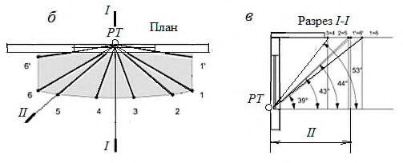
а
- фасад; б - разрез 1-1
Рисунок Ж.6 Параметры проектируемого солнцезащитного устройства с вертикальными ламелями
Для этого на плоскости характерного сечения СЗУ, на прямой, параллельной плоскости остекления изображается ряд оснований ламелей ( L1, L2 …) с одинаковым интервалом. Угол Θ откладывается от плоскости остекления, угол δ откладывается от перпендикуляра к плоскости стекла.
Построенные углы Θ и δ позволяют определить угол инсоляции δZ .
Примечания
1 Если затеняющие ламели перпендикулярны к плоскости остекления (Θ=90°), тогда δ=δZ.
2 Для минимизации расхода материала ламелей рекомендуется принимать Θ=δ.
Определив угол δZ, мы можем изобразить его теневую маску.
На рисунке Ж.7 изображены теневые угломеры для расчета горизонтальных, вертикальных и комбинированных СЗУ. а - теневой угломер; б -теневая маска горизонтального СЗУ; в - теневая маска вертикального СЗУ; г - теневая маска комбинированного СЗУ Рисунок Ж.7 Теневые угломеры для расчета горизонтальных, вертикальных и комбинированных СЗУ
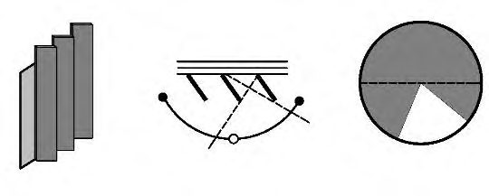
Рисунок Ж.8 Солнечная карта с зоной перегрева в период между 22 мая и 22 июля (ЗП 3)
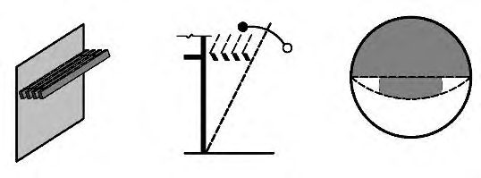
Рисунок Ж.9 Солнечная карта с зоной перегрева в период между 22 апреля и 22 августа (ЗП 2)
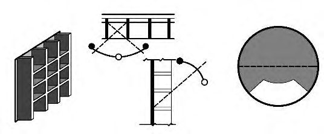
Рисунок Ж.10 Солнечная карта с зоной перегрева в период между 22 марта и 22 сентября (ЗП 1)
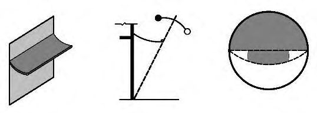
Приложение И Теневые угломеры для расчета СЗУ
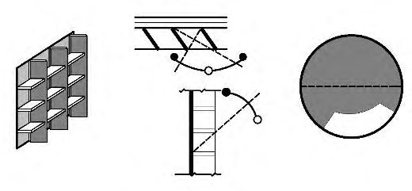
Рисунок И.1 Теневой угломер для расчета горизонтальных и вертикальных солнцезащитных устройств
Рисунок И.2 Теневой угломер для расчета СЗУ общего положения западной ориентации при угле наклона направляющей ламелей 30
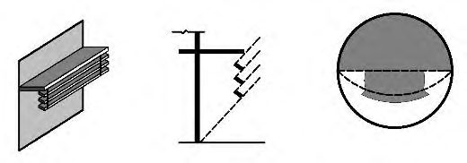
Рисунок И.3 Теневой угломер для расчета СЗУ общего положения западной ориентации при угле наклона направляющей ламелей 60
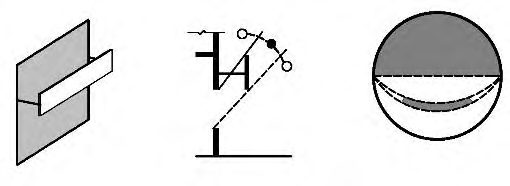
Рисунок И.4 Теневой угломер для расчета СЗУ общего положения восточной ориентации при угле наклона направляющей ламелей 30
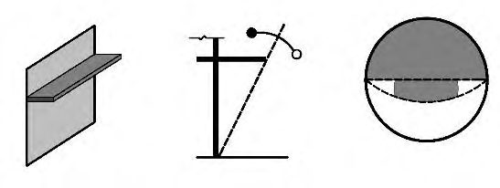
Рисунок И.5 Теневой угломер для расчета СЗУ общего положения восточной ориентации при угле наклона направляющей ламелей 60
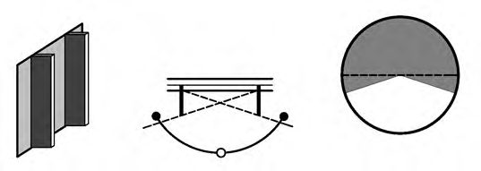
КПриложение К. Солнечные карты для географических широт 40° - 60° с. ш.
К.1Порядок работы с солнечными картами определен в приложениях Ж и И.
Рисунок К.1 Солнечная карта для 40° с.ш.
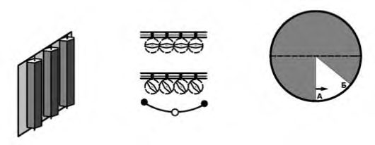
Рисунок К.2 Солнечная карта для 42° с.ш.
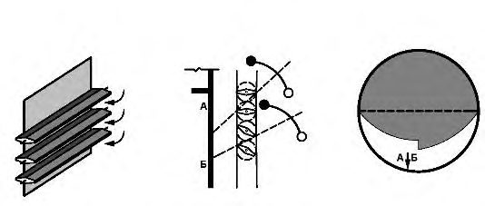
Рисунок К.3 Солнечная карта для 44° с.ш.
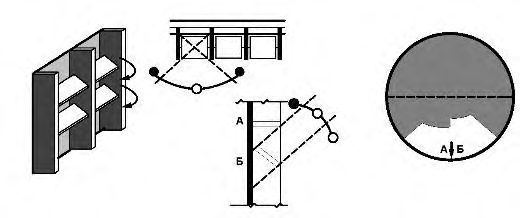
Рисунок К.4 Солнечная карта для 46° с.ш.
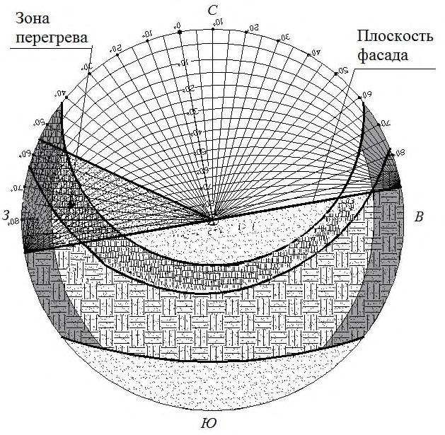
Рисунок К.5 Солнечная карта для 48° с.ш.
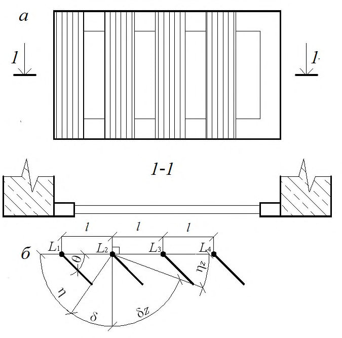
Рисунок К.6 Солнечная карта для 50° с.ш.
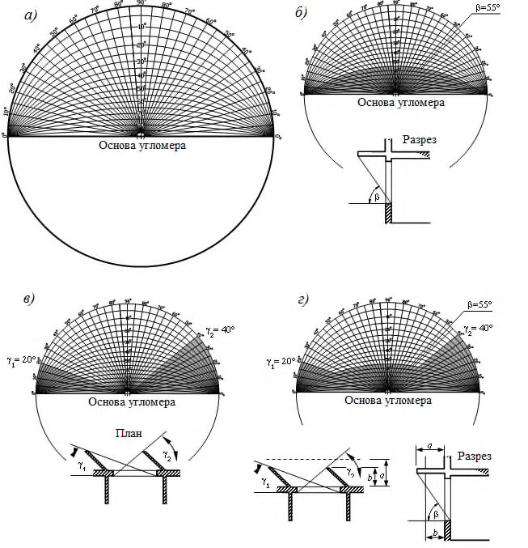
Рисунок К.7 Солнечная карта для 52° с.ш.
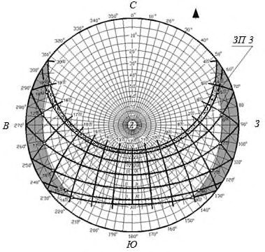
Рисунок К.8 Солнечная карта для 54° с.ш.
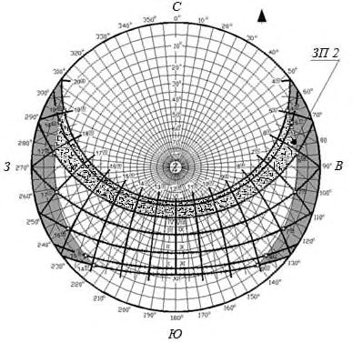
Рисунок К.9 Солнечная карта для 56° с.ш.
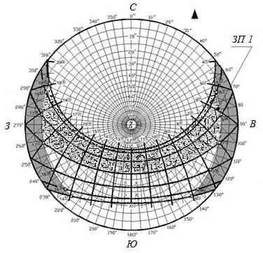
Рисунок К.10 Солнечная карта для 58° с.ш.
Рисунок К.11 Солнечная карта для 60° с.ш.
Библиография
- [1] Федеральный закон от 22 июля 2008 № 123-ФЗ «Технический регламент о требованиях пожарной безопасности»